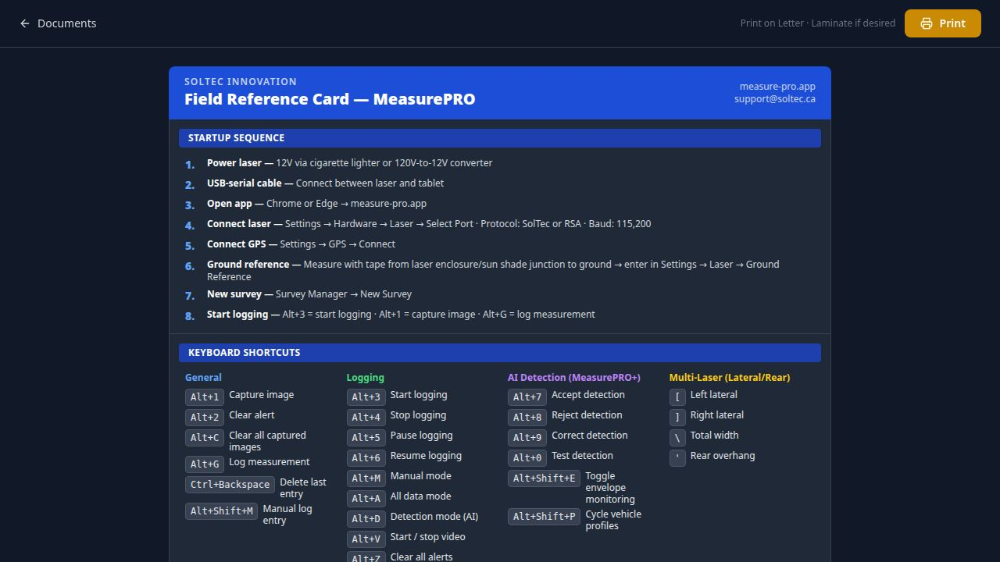
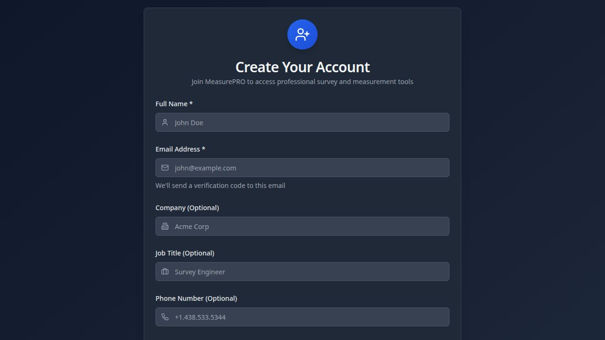
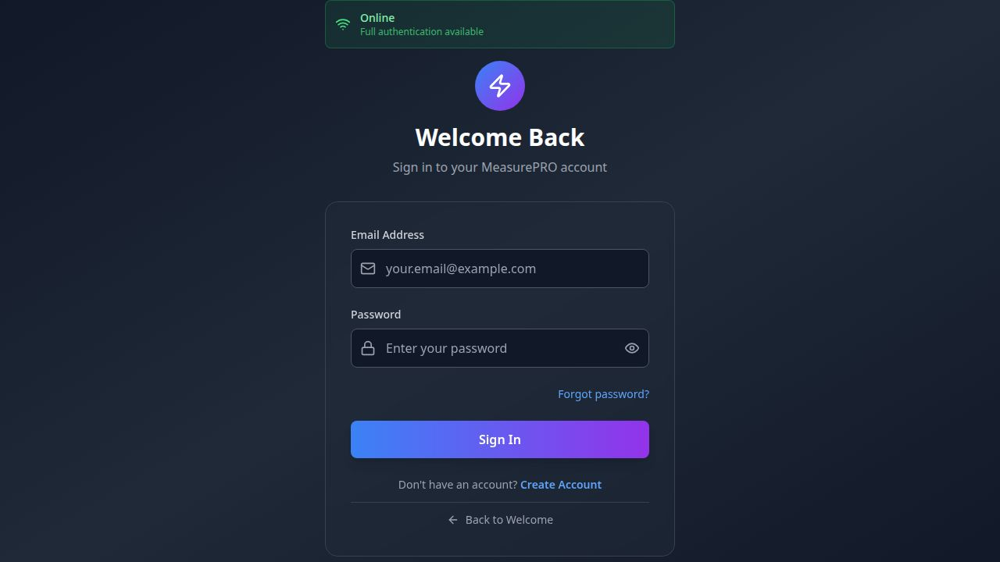
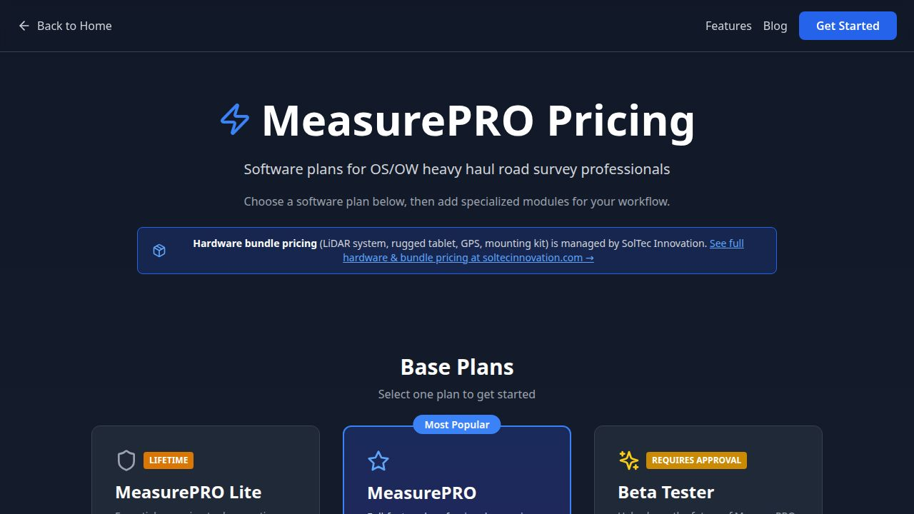
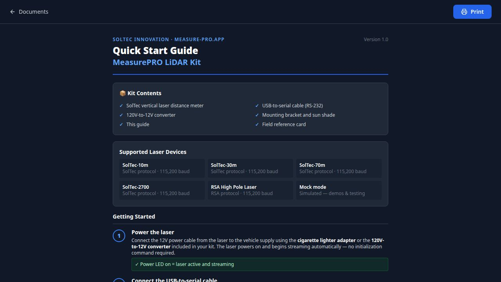
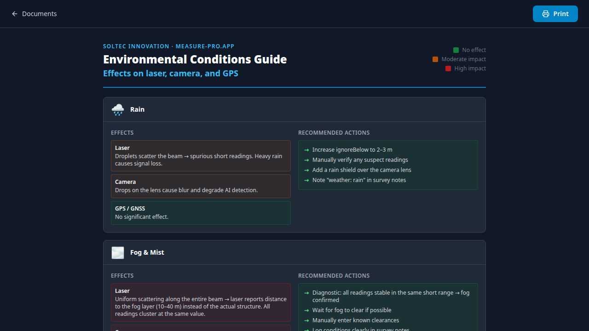
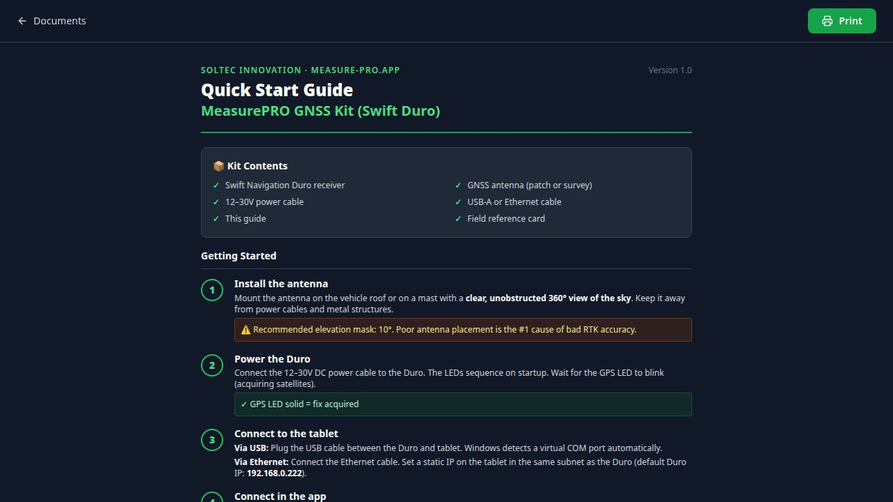
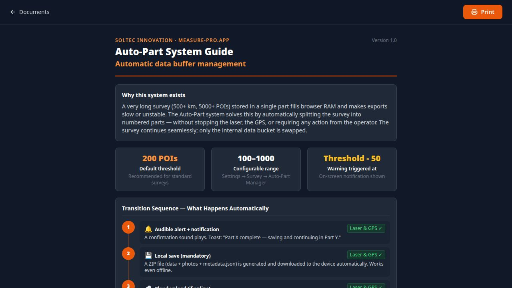

MeasurePRO
Complete User Manual
Professional LiDAR Road Survey for Oversize & Overweight Transport
Follow these 8 steps to complete your first clearance survey after receiving your MeasurePRO kit.
- 1Power the laser
Connect the 12V power cable from the laser enclosure to the vehicle's cigarette lighter adapter, or use the included 120V-to-12V converter. The Power LED turns on immediately — the laser streams measurements automatically, no commands required.
- 2Connect USB-to-Serial cable
Plug the DB9 cable from the laser into the tablet's USB-to-serial adapter. Windows detects it as a COM port (e.g.,
COM3) within seconds. - 3Open the app
Open Google Chrome or Microsoft Edge and navigate to measure-pro.app. Sign in with your credentials. If using the PWA, tap Install when prompted for offline capability.
- 4Connect the laser in Settings
Go to Settings → Laser & GPS → Laser tab. Click Select Port, choose your COM port, set Protocol to SolTec (or RSA for the High Pole), baud rate is auto-set to 115,200. Click Connect. The current measurement appears immediately.
- 5Set the Ground Reference
Measure with a tape measure from the bottom of the laser enclosure/sun shade to the ground. Enter that distance in Settings → Laser & GPS → Ground Reference field. This value is subtracted from all readings to give true clearance.
- 6Connect GPS
If using a USB GPS dongle, go to Settings → Laser & GPS → GPS tab and click Select Port. For Swift Duro GNSS, see Part 4. For Bluetooth GPS, use the Bluetooth tab.
- 7Create a new survey
Click the Survey Manager tab (or the clipboard icon in the sidebar). Click New Survey, fill in the route name and description, then click Create. The survey is now active and ready to log POIs.
- 8Start logging
Press Alt+3 to start logging, or click the Start Logging button. Drive your route. Use Alt+G to manually log a measurement at any POI. Press Alt+1 to capture a photo. When done, press Alt+4 and close your survey from Survey Manager.
Use the Laser Quick Start Guide and the Field Reference Card (printable, laminate-ready) for a condensed checklist you can keep in the vehicle.

1.1 Creating Your Account
MeasurePRO uses Firebase Authentication for secure login. All accounts require admin approval before the app becomes fully accessible — typically within 24 hours on business days.
- Navigate to measure-pro.app and click Sign Up.
- Enter your name, company, email, and a strong password.
- Agree to the Terms of Service and Privacy Policy.
- Submit — you'll receive a confirmation email immediately.
- Wait for admin approval. You'll receive an email when your account is activated.

After registering, the app shows an "Awaiting Approval" screen until an admin activates your account. If you need urgent access, email support@soltec.ca or call 1.438.533.5344.
1.2 Logging In
Go to measure-pro.app/login. Enter your email and password. Use Forgot Password to reset via email if needed.

1.3 Subscription Plans
MeasurePRO offers three base plans plus optional add-on modules:

| Plan | Access Type | Key Features |
|---|---|---|
| MeasurePRO Lite | Lifetime | Core laser measurement, GPS logging, basic POI types, CSV export |
| MeasurePRO | Most Popular | All Lite features + GNSS/Duro, multi-laser, road profile, all export formats, auto-part |
| Beta Tester | Invite Only | All features including AI, envelope clearance, convoy, swept path, LiDAR |
Feature modules (AI+, Envelope Clearance, Convoy Guardian, etc.) are available as add-ons. Contact SolTec Innovation for pricing. Hardware bundle pricing (rugged tablet, LiDAR kit, GPS, mounts) is managed separately at soltecinnovation.com.
1.4 Browser & Device Requirements
| Requirement | Details |
|---|---|
| Browser | Google Chrome 120+ or Microsoft Edge 120+ (required for Web Serial API) |
| Tablet/PC | Windows 10/11 recommended; any OS for GPS-only workflows |
| USB | USB-A or USB-C port for USB-to-serial adapter |
| Memory | 8 GB RAM minimum; 16 GB recommended for long surveys |
| PWA Install | Click the install icon in Chrome's address bar for offline capability |
| Permissions | Camera, Microphone, Serial Port, Location must be allowed |
1.5 App Layout Overview
The main app interface has three primary areas: a top bar with status indicators, a left sidebar for navigation between major views, and the main content area which changes based on the active view.
Current Measurement
Min / Max (session)
Active Survey — HWY 40 North Loop
The main dashboard shows the current laser measurement (large), session min/max, active survey status, GPS coordinates, and speed — all updated in real time.

2.1 Supported Laser Devices
| Model | Protocol | Baud Rate | Format |
|---|---|---|---|
| SolTec-10m | SolTec | 115,200 | 3-byte binary |
| SolTec-30m | SolTec | 115,200 | 3-byte binary |
| SolTec-70m | SolTec | 115,200 | 3-byte binary |
| SolTec-2700 | SolTec | 115,200 | 3-byte binary |
| RSA High Pole Laser | RSA | 115,200 | 3-byte binary |
| Mock Mode | Mock | — | Simulated random data |
2.2 Connecting the Laser
- Go to Settings → Laser & GPS. The Laser tab is shown by default.
- Click Select Port — a browser dialog lists all available serial ports.
- Choose your USB-to-Serial COM port (usually the only option).
- Set Protocol: SolTec for all SolTec models; RSA for the High Pole Laser.
- Baud rate is automatically set to 115,200 — do not change it.
- Click Connect. The current measurement appears in the top card within 1–2 seconds.
Live Reading
2.3 Ground Reference
The Ground Reference is the vertical distance from the laser beam exit point (bottom of the sun shade/enclosure) to the road surface. This value is subtracted from every raw reading to give true vertical clearance.
If your mounting height changes (different vehicle, removed the sun shade bracket), re-measure and update the ground reference. A 5 cm error here means all clearances are off by 5 cm.
To set: go to Settings → Laser & GPS → Ground Reference tab. Enter the distance in metres. Click Save. The live reading card updates immediately.
2.4 Ignore Above / Ignore Below Thresholds
Raw laser readings can include spurious returns from the sky or the road surface itself. Two thresholds filter these out:
- Ignore Above: Discard readings greater than this value (metres). Default: 25 m. Use 15 m in urban canyons to avoid reflection from buildings.
- Ignore Below: Discard readings less than this value. Default: 0 m. Set to 0.5–1.0 m when driving in fog or rain to eliminate false close-range returns.
2.5 Measurement Filtering
The Filters tab (Settings → Laser & GPS) provides three filtering tools:
| Filter | What It Does | When to Use |
|---|---|---|
| Amplitude Filter | Discards readings with a signal return strength (intensity) below a set threshold | Eliminate multi-path reflections under bridges at night |
| Measurement Filter | Rolling average smoothing over N samples (1–20) | Smooth jitter on rough roads |
| Weather Quality Filter | RSA-only: filters by intensity thresholds for Good vs Acceptable returns | Rain, fog, snow conditions with RSA laser |
See the Environmental Conditions Guide for specific filter settings recommended for rain, fog, snow, night, and tunnel conditions.

2.6 Mock Mode (Testing)
If no laser hardware is available, set Protocol to Mock. The app generates simulated random measurements in a realistic range, allowing you to test workflows, practice survey creation, and validate export formats without hardware.
MeasurePRO supports up to 4 independent laser ports for measuring lateral lane widths and rear overhang simultaneously with the primary vertical laser.
3.1 Hardware Specifications
Lateral / Rear Laser Specifications
Vertical laser = 115,200 baud. Lateral/rear lasers = 19,200 baud, 7-E-1. Using the wrong settings will result in garbled or no data.
3.2 Connecting Lateral / Rear Lasers
Go to Settings → Lateral/Rear. Four port selectors appear:
- Left Lateral Laser — aimed horizontally to the left side of the vehicle
- Right Lateral Laser — aimed horizontally to the right side
- Rear Laser — aimed backward for overhang monitoring (wind blade transport)
For each port: click Select Port, choose the COM port, confirm the protocol is soltec-old, then click Connect.
3.3 Vehicle Offset Calibration
Because the laser isn't mounted at the vehicle's edge, you must enter the vehicle offset — the distance from the laser emitter to the outermost edge of the vehicle on each side. This is subtracted from the lateral reading to give road-edge-to-vehicle-edge clearance.
- Single laser mode: One lateral laser used to measure to one lane boundary. The other boundary is inferred from lane width (configurable).
- Dual laser mode: Left and right lasers measure simultaneously for real-time total lane width.
3.4 Rear Overhang Monitoring
Used for wind blade and long-load transport. The rear laser monitors the distance from the rear of the load to following vehicles or road features. Alert thresholds up to 80 m.
- Warning threshold: Alert triggered when rear reading exceeds this value
- Critical threshold: 150% of warning threshold — critical alarm sounds
Rear overhang data is recorded in the measurement log and exported with survey data.
3.5 Keyboard Shortcuts — Multi-Laser
| Shortcut | Action |
|---|---|
| [ | Log left lateral measurement |
| ] | Log right lateral measurement |
| \ | Log total width (left + right) |
| ' | Log rear overhang measurement |
3.6 Multi-Camera Integration
Lateral and rear POI captures automatically use the corresponding position camera when configured:
- Left lateral detection → uses left camera
- Right lateral detection → uses right camera
- Rear overhang → uses rear camera
Configure per-position cameras in Settings → Camera → Multi-Camera. If a position camera isn't configured, the system falls back to the front camera, then the selected default camera.

4.1 GPS Source Priority
MeasurePRO supports three simultaneous GPS sources. When multiple are connected, a strict priority order determines which data is used for logging:
| Priority | Source | Typical Accuracy | Notes |
|---|---|---|---|
| Highest | Swift Duro GNSS (RTK) | 1–3 cm | Active when data received within last 5 seconds |
| Medium | USB Serial GPS | 2–5 m | Takes over automatically if Duro stops for 5+ sec |
| Lower | Bluetooth GPS | 2–5 m | Same priority level as USB GPS |
| Fallback | Browser Geolocation API | 10–50 m | Only when no hardware GPS is connected |
If the Duro GNSS loses signal (tunnel, multi-path) for 5 seconds, USB GPS takes over seamlessly. When the Duro reacquires, it resumes priority. No manual intervention needed.
4.2 Connecting a USB GPS
- Go to Settings → Laser & GPS → GPS tab.
- Click Select GPS Port.
- Choose the COM port for your GPS dongle.
- Protocol: NMEA (all consumer GPS devices use this).
- Click Connect. Latitude/longitude appear within seconds.
4.3 Bluetooth GPS
- Go to Settings → Laser & GPS → Bluetooth tab.
- Ensure your Bluetooth GPS device is powered on and paired with the tablet.
- Click Scan for Devices. Select your GPS unit from the list.
- Click Connect. Uses Web Bluetooth API — Chrome required.
4.4 Swift Navigation Duro GNSS (RTK)
The Swift Navigation Duro provides centimetre-level accuracy via RTK correction. It connects to the tablet via USB or Ethernet.
Duro Connection Parameters
http://localhost:8765- 1Install the Duro antenna
Mount on roof or mast with clear 360° sky view. Elevation mask: 10°. Poor placement is the #1 cause of bad RTK accuracy.
- 2Power the Duro
Connect 12–30V DC. Wait for GPS LED to blink (acquiring) then go solid (fix acquired).
- 3Connect to the tablet
Via USB: Windows detects a virtual COM port. Via Ethernet: Set tablet to same subnet as Duro (192.168.0.x).
- 4Run the bridge
Launch
measure-pro-duro-bridge.exe. It runs on port 8765 and translates SBP binary to WebSocket for the PWA. - 5Connect in the app
Go to Settings → GNSS/Duro. Click Connect to Duro. The IMU data (roll, pitch, heading) appears in addition to coordinates.
4.5 GPS Data Display
The GPS Data panel (visible in the main app, collapsible) shows:
Latitude
Longitude
Speed
Heading
Altitude
Source
Fix Quality
Satellites
Roll (Banking)
Pitch
Curve Radius
4.6 Banking & Cross-Slope (Duro IMU)
When the Duro is connected, IMU roll data feeds the banking/cross-slope system. Three processing modes:
- Raw: Direct roll reading from IMU, no smoothing
- Filtered: Low-pass filter removes vibration noise
- Stopped-only: Banking only recorded when vehicle speed < 5 km/h
Default alert thresholds:
| Range | Level | Color |
|---|---|---|
| 0° – 3° | Normal | ✓ Safe |
| 3° – 5° | Caution | ● Caution |
| 5° – 7° | Warning | ⚠ Warning |
| 7° – 10° | Critical | 🚨 Critical |
| > 10° | Unacceptable | 🚫 Unacceptable |
All thresholds are configurable in Settings → GNSS/Duro → Banking Thresholds.
5.1 Camera Setup
Go to Settings → Camera. Select your preferred camera from the dropdown (lists all connected cameras). Click Test Camera to preview the feed.
- Resolution: 1080p recommended; 720p for slower tablets
- Auto-capture: When enabled, the app captures a photo 10 seconds before and after each logged POI using a rolling frame buffer
- JPEG Quality: Configurable 60–100%. 85% recommended for field work
5.2 Multi-Camera Positions
Configure separate cameras for four positions in Settings → Camera → Multi-Camera:
| Position | Typical Use | Auto-linked to POIs |
|---|---|---|
| Front | Primary road view, overhead structures | All height clearance POIs |
| Left | Left lane boundary, lateral obstacles | Left lateral measurements |
| Right | Right lane boundary, right-side obstacles | Right lateral measurements |
| Rear | Load overhang monitoring | Rear overhang measurements |
5.3 Capturing Photos
- Press Alt+1 to capture immediately from the active camera
- The captured image appears in the Captured Images panel
- Images are stored locally and linked to the active survey
- Multiple images can be pending — they are embedded in the survey ZIP on export
For certain POI types (railroad, intersection, road, bridge, danger), the camera fires automatically when logging. See Part 8 for the complete auto-capture POI list.
5.4 Video Recording
Press Alt+V to start/stop video recording. Video is stored locally and can be linked to the active survey. A 10-second rolling buffer means the last 10 seconds of footage is always preserved when you trigger a capture.
GPS coordinates and POI timestamps are synchronized with video for geo-referenced playback.
5.5 AI Detection Camera (MeasurePRO+)
When AI detection is enabled, the camera feed is analyzed in real-time using TensorFlow.js COCO-SSD. See Part 15 for AI detection details.
6.1 What is the Stream Deck?
The Elgato Stream Deck is a programmable button panel that lets operators trigger MeasurePRO actions hands-free while driving — without looking away from the road. All keyboard shortcuts can be mapped to Stream Deck buttons.
6.2 Downloading the Stream Deck Profile
- Go to Settings → Keyboard.
- Click the "Download Stream Deck Profile" button at the top of the page.
- The file
MeasurePRO.streamDeckProfiledownloads automatically. - In the Stream Deck software, click the gear icon → Import and select the downloaded profile.
The downloaded profile includes all MeasurePRO keyboard shortcuts already mapped to buttons — Start Logging, Stop Logging, Capture Image, Log Measurement, POI types, and more. Just import and go.
6.3 Recommended Button Layout
LOGGING
Alt+3
LOGGING
Alt+4
IMAGE
Alt+1
MEASURE
Alt+G
Alt+5
POI
Shift+1
POI
Shift+2
LINE
Shift+3
POI
Shift+4
Ctrl+BS
Example 2-row layout. The downloaded profile provides a complete pre-mapped set of all functions.
7.1 What is a Survey?
A Survey is the primary data container in MeasurePRO. It holds all POIs, measurements, photos, voice notes, and GPS tracks for one route or inspection session. Every measurement log entry must belong to an active survey.
7.2 Creating a New Survey
- Click the Survey Manager tab in the Settings sidebar.
- Click New Survey.
- Fill in: Survey Name (required), Description, Road/Route Number, Operator Name.
- Click Create Survey. The survey becomes active immediately.
Active Survey
Total POIs
Distance
Photos
7.3 Survey Statistics
The Survey Manager panel displays real-time statistics for the active survey: total POI count, number of photos, distance traveled, and time elapsed. These update as you log.
7.4 Auto-Save
Surveys auto-save at a configurable interval (default: every 60 minutes). A local ZIP file containing all data and photos is downloaded automatically, even without internet. Configure in Settings → Logging → Auto-Save:
- Auto-Save Interval: 5 minutes to 24 hours
- Include Images: Toggle whether photos are included in auto-save ZIP
- Custom Filename: Template for auto-save file names
7.5 Auto-Part System
For very long surveys (500+ km), the Auto-Part system automatically splits the survey into numbered parts when the POI count reaches the threshold, preventing memory issues and ensuring data safety.

Auto-Part Parameters
When a part completes: an audible alert sounds, a toast notification appears, a local ZIP saves automatically, and the survey seamlessly continues in the next part — laser and GPS keep running without interruption.
7.6 Closing a Survey
Click Close Survey in Survey Manager. The app prompts for confirmation, then exports a final package to local storage and attempts cloud upload if online. A closed survey is read-only — you can still export it but cannot add new measurements.
7.7 Loading a Previous Survey
Click Load Survey to see a list of all surveys stored in the local database. Click any survey to set it as active. You can also import a survey ZIP file from a backup using the upload button.
7.8 Importing Surveys from ZIP
Survey ZIP files created by MeasurePRO (v2.0 format) can be re-imported: click the upload button in Survey Manager, select the ZIP, and the data is restored including POIs, measurements, and embedded images.
7.9 Cloud Sync
When connected to the internet, surveys automatically sync to Firebase. The sync status is shown in Settings → Sync. Each survey part uploads as a separate package. The sync indicator in the top bar shows pending/complete status.
Everything works without internet. The app stores all data in IndexedDB locally. When connectivity resumes, pending items sync automatically. You'll never lose data due to loss of signal.
7.10 Road Profile Recording Control
The Survey Manager includes a Profile Recording Control card that starts/stops GNSS road profile recording for the active survey. This is separate from POI logging — it continuously records GPS position, elevation, speed, banking, and K-factor for road engineering analysis. See Part 13.
MeasurePRO supports 35 Point of Interest (POI) types, each with specific behavior for height capture, auto-photo, and display. POIs are identified by their unique ID (first 8 characters displayed, e.g., POI abc12345).
8.1 Height Clearance POI Types
The following POI types automatically record the current laser height reading when logged. The reading must pass ignoreAbove/ignoreBelow thresholds and the ground reference is subtracted.
8.2 Auto-Photo POI Types
These POI types trigger automatic camera capture when logged:
8.3 Modal POI Types
These POI types open a text entry modal when logged, allowing you to enter a note or description:
8.4 Complete POI Type Reference
| POI Type | Category | Height Capture | Auto-Photo | Modal |
|---|---|---|---|---|
| Bridge | Infrastructure | — | ✓ | — |
| Trees | Vegetation | ✓ | — | — |
| Wire | Utility | ✓ | — | — |
| Power Line | Utility | ✓ | — | — |
| Traffic Light | Signage | ✓ | — | — |
| Overpass | Infrastructure | ✓ | — | — |
| Lateral Obstruction | Obstacle | — | — | ✓ |
| Road | Navigation | — | ✓ | — |
| Intersection | Navigation | — | ✓ | — |
| Signalization | Signage | ✓ | — | — |
| Railroad | Infrastructure | ✓ | ✓ | — |
| Information | Note | — | — | ✓ |
| Danger | Safety | — | ✓ | — |
| Important Note | Note | — | — | ✓ |
| Work Required | Note | — | — | ✓ |
| Restricted | Safety | — | — | ✓ |
| Bridge & Wires | Infrastructure | ✓ | — | — |
| Grade UP (legacy) | Road Geometry | — | — | — |
| Grade Down (legacy) | Road Geometry | — | — | — |
| Grade 10-12% UP | Road Geometry | — | — | — |
| Grade 10-12% DOWN | Road Geometry | — | — | — |
| Grade 12-14% UP | Road Geometry | — | — | — |
| Grade 12-14% DOWN | Road Geometry | — | — | — |
| Grade 14%+ UP | Road Geometry | — | — | — |
| Grade 14%+ DOWN | Road Geometry | — | — | — |
| Autoturn Required | Navigation | — | — | — |
| Voice Note | Note | — | — | — |
| Optical Fiber | Utility | ✓ | — | — |
| Passing Lane | Navigation | — | — | — |
| Parking | Navigation | — | — | — |
| Overhead Structure | Infrastructure | ✓ | — | — |
| Gravel Road | Road Type | — | — | — |
| Dead End | Navigation | — | — | — |
| Culvert | Infrastructure | — | — | — |
| Emergency Parking | Safety | — | — | — |
| Roundabout | Navigation | — | — | — |
9.1 Logging Modes
MeasurePRO has five logging modes that control how measurements are recorded:
| Mode | Key | Description | Shortcut |
|---|---|---|---|
| Manual | manual | Only logs when you press a button or keyboard shortcut. Most common for surveys. | Alt+M |
| All Data | all | Logs every laser measurement continuously (high volume). Use for dense data collection. | Alt+A |
| Object Detection | detection | Logs automatically when AI detects an overhead object (MeasurePRO+ only). | Alt+D |
| Manual + Detection | manualDetection | Both manual logging and AI auto-detection are active simultaneously. | — |
| Counter Detection | counterDetection | Logs when the object count in the frame drops (departure trigger). Advanced use. | — |
Logging Controls
9.2 Manual Logging (Mode: Manual)
This is the most common workflow for OS/OW surveys:
- Set POI type in the POI selector (or use a keyboard shortcut).
- As you approach the structure, press Alt+G or click Log Measurement.
- The app records: current laser reading, GPS coordinates, speed, heading, UTC time, photo (if auto-capture is on), and the selected POI type.
- A toast notification confirms the log entry.
9.3 Manual Log Entry Dialog
Press Alt+Shift+M to open the Manual Log Entry modal. This lets you type a custom height value and note — useful when logging a previously known clearance (e.g., from a permit or field note) without a live laser reading.
9.4 Deleting the Last Entry
Press Ctrl+Backspace to delete the most recently logged measurement. A confirmation prompt appears first. This action cannot be undone.
9.5 Measurement Log Display
The measurement log shows all POIs for the active survey in reverse chronological order (newest first). Each row shows:
- POI type badge (color-coded)
- Unique POI ID (8 characters)
- Height clearance in metres (and feet/inches)
- GPS coordinates
- UTC date and time
- Speed and heading at time of capture
- Photo thumbnail (if an image was captured)
- Note (if entered)
Click any row to open a detail view. Click the note icon to add or edit a note. The list is virtualized for performance — it handles 10,000+ entries without slowdown.
9.6 Editing Notes
Click the note icon on any log row to open an inline note editor. Type your note and click Save. Notes are stored with the measurement and appear in all exports.
10.1 Alert Thresholds
The alert system monitors the live laser reading and triggers visual and audio alerts when measurements approach or breach clearance limits.
Warning Threshold
Critical Threshold
Configure thresholds in Settings → Alerts:
- Min Height: Ignore readings below this (filters ground returns)
- Max Height: Ignore readings above this (filters sky returns). Default 25 m.
- Warning Threshold: Alert triggers when reading drops below this. Default: 4.20 m (13' 9")
- Critical Threshold: Emergency alert below this. Default: 4.00 m (13' 1.5")
Thresholds can be set in metric (metres) or imperial (feet and inches) — use the units toggle in Settings → Display.
10.2 Alert Sounds
Each alert level has a configurable sound from the full sound library:
| Event | Default Sound | Available Sounds |
|---|---|---|
| Log Entry | Interface | Interface, Confirmation, Message Pop, Long Pop, Double Beep, Retro Confirmation, Elevator Tone, Elevator, Interface Hint, Log Entry |
| Warning Alert | Alert Alarm | Alert Alarm, Classic Alarm, Elevator Warning, Sci-Fi Alarm, Slot Machine Alarm, Warning Sound, Double Beep Alert |
| Critical Alert | Facility Alarm | Facility Alarm, Security Breach, Sci-Fi Critical, Classic Critical, Critical Alert, Alert Critical |
| Notification | Confirmation | Confirmation, Long Pop, Elevator Tone, Message Pop, Interface Hint, Retro Confirmation, Double Beep, Interface |
Click the play button next to any sound in Settings → Alerts to preview it. Sounds play through the system speaker — ensure volume is adequate in the vehicle.
The alert banner shows until the measurement rises back above the threshold, or you press Alt+2 to manually clear it. Each alert session tracks separately — re-triggering happens on the next new measurement that crosses the threshold.
10.3 Clearing Alerts
- Alt+2: Clear current alert banner
- Alt+7: Clear all alerts (all banners dismissed)
11.1 Image Capture
- Press Alt+1 to capture a photo from the current camera
- Images appear immediately in the Captured Images panel
- Multiple images can be pending — they all get attached to the next logged POI
- Press Alt+C to clear all pending captured images
- Images are stored in IndexedDB and included in survey ZIP exports
11.2 Video Recording
- Press Alt+V to toggle video recording on/off
- GPS coordinates are embedded in video metadata for geo-referenced playback
- POI timestamps sync with video for frame-accurate review
- A 10-second rolling buffer is always maintained — trigger capture up to 10 seconds after a critical event
- Video compression settings configurable in Settings → Camera
11.3 Voice Notes
The Voice Note POI type records audio using the Web Speech API:
- Set POI type to Voice Note
- Press Alt+G or the log button
- A recording starts automatically — speak your note
- Press stop or the shortcut again to end recording
- The audio is stored and linked to the GPS location
Voice-to-text transcription is available when enabled in Settings → Voice — the transcript is saved as the POI note.
11.4 Logo / Watermark
All captured images can include a company logo watermark. Configure in Settings → Logo. Upload a PNG logo and position it in one of 4 corners. The watermark is baked into exported images.
12.1 Live Map View
The map view (click the map icon in the sidebar) shows a real-time GPS track overlaid on an OpenStreetMap base layer. POIs appear as color-coded markers matching their type. The camera icon in the top bar centers the map on your current position.
12.2 Map Layers & Settings
Configure in Settings → Map:
- Tile Provider: OpenStreetMap, Satellite, Hybrid, or custom tile URL
- Track Color: Color of the GPS trace line
- POI Marker Size: Small, Medium, Large
- Cluster POIs: Group nearby markers at low zoom levels (handles 100,000+ records)
- Show Speed Heat Map: Overlay driving speed as a color gradient
12.3 Offline Maps
When offline, cached map tiles from recent sessions are used. Areas not previously visited show blank grid squares. Tile cache size is configurable (default: 200 MB). GPS tracking and POI logging continue fully offline — only the base map tiles require internet.
12.4 Clicking Map Markers
Click any POI marker on the map to open a popup with the measurement detail: height, POI type, time, speed, and a thumbnail of any attached photo. Click the thumbnail to open the full image.
13.1 What is Road Profile Recording?
The GNSS Road Profile system records a continuous GPS elevation profile along the surveyed route. Combined with Duro IMU data, it computes chainage, grade, K-factor (vertical curve geometry), and banking — critical data for OS/OW permit applications.
13.2 Starting a Profile Recording
- Ensure the Swift Duro GNSS is connected (see Part 4).
- Open Survey Manager (Settings → Logging tab or the clipboard icon).
- Click Start Profile Recording in the Profile Recording Control card.
- Drive the route. The recording continues in the background — you can navigate to other app sections without interrupting it.
- When done, click Stop Profile Recording.
The profile recording service is a singleton that persists across page navigation. Even if you switch to the map view or camera, the profile continues recording. Data is flushed to IndexedDB every 30 seconds for crash safety.
13.3 Road Profile Page
The Road Profile page (/road-profile) provides real-time visualization of the recorded profile:
- Elevation profile chart — distance (chainage) vs altitude
- Grade chart — percentage grade along the route
- K-factor chart — vertical curve geometry
- Alert segments — highlighted sections where grade exceeds limits
- Banking/roll chart — cross-slope from IMU
- GPS point count and recording statistics
13.4 Profile Export
Road profile data exports in 5 professional engineering formats. See Part 14 for the complete export reference.
13.5 GNSS Profiling Page
The GNSS Profiling page (/gnss-profiling) provides a dedicated full-screen view for profile recording, with real-time NMEA status display, GNSS diagnostics, and IMU attitude visualization. Includes a calibration suite for verifying Duro accuracy.
14.1 Survey Export Formats
Surveys can be exported from the Survey Manager. Click Export to open the Survey Export Dialog:
| Format | Files Created | Software | Use Case |
|---|---|---|---|
| CSV | survey.csv | Excel, any spreadsheet | General sharing, permit applications |
| GeoJSON | survey.geojson | QGIS, ArcGIS, Mapbox | GIS analysis, web mapping |
| Shapefile | .shp, .shx, .dbf, .prj | ArcGIS, QGIS | Professional GIS, CAD integration |
| DXF | survey.dxf | AutoCAD, Civil3D | Engineering drawing overlay |
| LandXML | survey.xml | Civil 3D, Bentley | Road design software input |
| ZIP Bundle | .zip (all above + photos) | — | Complete backup, re-importable |
| KML | survey.kml | Google Earth | Visual route review |
| YOLO | labels/, images/ | YOLO training | AI training data export (MeasurePRO+) |
14.2 Coordinate Reference System (CRS)
Exports support multiple CRS via the proj4 library:
- WGS84 (EPSG:4326): Standard GPS coordinates — use for most applications
- Web Mercator (EPSG:3857): Used by Google Maps, OpenStreetMap
- Australian MGA Zones: MGA54, MGA55, MGA56 (EPSG:28354–28356)
- Custom EPSG: Enter any valid EPSG code for local survey grids
14.3 ZIP Bundle (Re-importable)
The ZIP Bundle format includes a metadata.json with calibration provenance (ground reference value, laser model, GNSS fix quality at time of survey). ZIP files are re-importable — you can restore a complete survey from a ZIP backup for round-trip capability.
14.4 Road Profile Export
Road profile data (from the GNSS recording system) exports in all 5 engineering formats plus resampling options:
- Full density: Every recorded GPS sample
- Fixed interval resampling: One point every N metres (e.g., every 10 m) for uniform profile analysis
MeasurePRO+ extends the base app with AI-powered object detection and specialized clearance modules. These features require an active MeasurePRO+ license or Beta Tester account.
15.1 AI Object Detection
The AI system uses TensorFlow.js COCO-SSD running locally in the browser — no cloud processing required, works offline.
- Real-time detection: Camera feed analyzed at up to 30 fps
- Detected classes: All 80 COCO classes including person, car, truck, traffic light, stop sign, etc.
- Confidence threshold: Configurable (default 60%) — reduce for more detections, increase for fewer false positives
- Detection logging: Each detection can be accepted (Alt+7), rejected (Alt+8), or corrected (Alt+9)
15.2 Detection Modes
| Mode | Shortcut | Description |
|---|---|---|
| Detection (AI) | Alt+D | Auto-logs when AI detects specified object types overhead |
| Accept Detection | Alt+7 | Accept current AI detection — logs to survey |
| Reject Detection | Alt+8 | Reject false positive — discarded, not logged |
| Correct Detection | Alt+9 | Override AI class — opens POI selector to pick correct type |
| Test Detection | Alt+0 | Trigger a simulated detection event for testing |
15.3 Envelope Clearance
The Envelope Clearance module uses a ZED 2i stereo camera via WebSocket to create a 3D clearance envelope around the vehicle. Toggle with Alt+Shift+E.
- Configures vehicle envelope dimensions (height, width, length)
- Real-time clearance alerts when any obstacle enters the envelope
- Configure in Settings → Envelope
15.4 Convoy Guardian
The Convoy Guardian module coordinates multiple vehicles in an OS/OW convoy. Each vehicle runs MeasurePRO; the lead vehicle broadcasts alerts to all following vehicles via WebSocket.
- Configure vehicles in Settings → Convoy
- Cycle vehicle profiles with Alt+Shift+P
- Leader and follower roles configurable
15.5 Permitted Route Enforcement
Upload a permitted route (GeoJSON or KML) and the system alerts when the vehicle deviates from the approved corridor. Configure in Settings → Route.
15.6 Swept Path Analysis
Real-time swept path analysis shows the predicted vehicle track through curves and intersections. Configure in Settings → Swept Path.
The current version uses simplified physics (proportional off-tracking distribution, hardcoded 90° arc turns). Perfect articulated vehicle physics are planned for a future release. See the in-code documentation for specifics.
15.7 AI Assistant
The AI Assistant tab (Settings → AI Assistant) provides a conversational interface for help, route planning suggestions, and analysis of survey results.
16.1 System Architecture
The LiDAR system uses the Hesai Pandar40P spinning LiDAR sensor. Since a PWA cannot receive UDP packets directly, a Windows Companion Service runs locally and bridges the hardware to the app.
LiDAR Service Specifications
lidar-service/ in the projectC:\MeasurePRO\Captures\ (configurable)MockMode: true in appsettings.json16.2 Connecting to the LiDAR Service
- Install and start
MeasurePROLiDARService.exeon Windows. It auto-selects an available port (17777–17787). - In the app, navigate to the LiDAR page (/lidar) or click the LiDAR icon.
- Click Connect — the app tries port 17777, then falls back down the list.
- When connected, the service streams road width, clearance at 4 m, 4.5 m, and 5 m heights.
16.3 HTTP API (from LiDAR Service)
| Endpoint | Method | Action |
|---|---|---|
/api/capture/static/start | POST | Start a static point cloud capture |
/api/capture/segment/start | POST | Start a rolling road segment capture |
/api/capture/stop | POST | Stop any active capture |
/api/gnss/heartbeat | POST | Push GNSS position to service (for geo-referenced export) |
16.4 3D Point Cloud Scanner Page
The Point Cloud Scanner page (/point-cloud-scanner) provides a Three.js 3D viewer showing the real-time point cloud from the Pandar40P. Rotate, pan, and zoom the cloud in 3D. Captures can be linked to survey POIs for traceability.
16.5 Recording Survives Navigation
LiDAR capture recording is managed by the Windows service — the PWA can navigate freely without interrupting a capture. GNSS heartbeats are pushed from the PWA to the service every second to maintain geo-referenced capture quality.
17.1 Slave App
The Slave App is a companion iOS/Android/tablet interface that connects to the main MeasurePRO instance via WebSocket for real-time synchronization. Use it to:
- View live measurements on a second screen (co-pilot display)
- Trigger captures and log entries remotely
- Use a device camera for the main app's camera feed
Configure in Settings → Slave App. Scan the QR code on the settings page with the slave device to pair.
The slave interface is available at measure-pro.app/slave-app — open this URL on the slave device's browser.
17.2 Live Monitor
The Live Monitor page (/LiveMonitor) provides a dispatcher/operations-center view of active surveys across multiple vehicles. Requires a Live Sharing license feature.
- See all connected vehicles on a shared map
- View each vehicle's current measurement and alert status
- Configure in Settings → Live Sharing
18.1 Storage Architecture
MeasurePRO uses an offline-first, dual-database architecture:
| Storage Layer | Technology | What's Stored |
|---|---|---|
| Primary (Local) | IndexedDB (idb) | Surveys, measurements, photos, settings, GPS track samples |
| Cloud Sync | Firebase Realtime DB | Synced survey packages, user profile, license info |
| Settings | localStorage | UI preferences, auto-save config, session flags |
| Profile Recordings | IndexedDB | GPS road profile samples (flushed every 30s) |
18.2 ACK-based Storage Health
MeasurePRO uses an ACK (acknowledgement) system for critical writes. When a measurement is saved, the system waits for IndexedDB to confirm the write before showing the success toast. If the write fails or stalls, a critical warning banner appears alerting to pending or failed writes.
If you see a "Stale Data" or "Pending Write" warning banner, do NOT close the browser until the indicator clears. Force-closing with unsaved writes may result in data loss. Use the Backup settings to immediately download a manual backup.
18.3 Backup
Go to Settings → Backup to:
- Download an immediate backup of all surveys and settings
- Configure automatic backup frequency
- Restore from a backup file
- View storage usage statistics
18.4 IndexedDB Debug
Administrators can inspect the raw IndexedDB contents at /admin/debug/indexeddb. This is useful for diagnosing data issues, orphaned records, or migration problems.
Access all settings via Settings in the sidebar. The settings panel has a scrollable tab bar with 29 tabs:
| Tab | Key Settings |
|---|---|
| Laser & GPS | Serial port, protocol (SolTec/RSA/Mock), baud 115200, ground reference, ignoreAbove/Below, amplitude filter, weather filter, GPS port, Bluetooth GPS |
| Lateral/Rear | Left/right/rear laser ports (19200 baud, 7-E-1), vehicle offsets, dual-laser mode, rear overhang thresholds (up to 80 m) |
| GNSS/Duro | Duro bridge URL (localhost:8765), banking thresholds (0-3°/3-5°/5-7°/7-10°/>10°), roll processing mode (raw/filtered/stopped), curve radius alert, K-factor |
| Camera | Camera selection, resolution, JPEG quality, auto-capture toggle, watermark, multi-camera positions (front/left/right/rear) |
| Calibration | Camera calibration wizard, distortion correction, field-of-view parameters (MeasurePRO+) |
| Detection | Confidence threshold, class filter, detection overlay display, debug panel |
| AI+ | TensorFlow.js model selection, mock/production mode, clearance alert distances, AI log integration |
| AI Assistant | Chat interface for help and analysis — no configuration needed |
| Envelope | Vehicle envelope dimensions, ZED camera connection, clearance margin settings |
| Convoy | Vehicle profiles, WebSocket server URL, leader/follower role |
| Route | Permitted route upload (GeoJSON/KML), corridor width, deviation alert |
| Swept Path | Vehicle type, axle configuration, turning radius, simulation resolution |
| Logo | Upload PNG logo, position (4 corners), opacity, size for image watermarking |
| Map | Tile provider, track color, POI marker size, clustering, offline cache size |
| Logging | Auto-save interval, include images in backup, auto-close survey, Auto-Part threshold (100–1000 POIs) |
| Alerts | Min/max height, warning threshold (default 4.2 m), critical threshold (default 4.0 m), sound selection for each event |
| SMTP configuration, auto-email survey reports, recipient list | |
| Display | Units (metric/imperial), decimal places, card layout, dark/light mode |
| Voice | Voice recognition language, auto-transcription, voice command bindings |
| Keyboard | Full shortcut reference table, Stream Deck profile download |
| POI Actions | Per-POI-type behavior overrides, custom auto-capture rules |
| Sync | Firebase sync status, pending upload queue, force sync button |
| Slave App | Pairing QR code, connected devices, permission grants |
| Backup | Manual backup download, restore from file, auto-backup schedule, storage usage |
| Developer | Debug logging, IndexedDB inspector, stress test, build info (beta users only) |
| Admin | Link to full Admin Panel at /admin (password protected — see Part 21) |
| Customize | Layout customizer — drag and resize dashboard cards, hide/show panels |
| Help | Links to all documentation, quick start guides, field reference card |
| About | App version, build date, license info, support contact |
General Actions
| Shortcut | Action |
|---|---|
| Alt+1 | Capture image from active camera |
| Alt+2 | Clear current alert banner |
| Alt+C | Clear all captured images (pending photos) |
| Alt+G | Log current measurement (manual capture) |
| Ctrl+Backspace | Delete last log entry (with confirmation) |
| Alt+Shift+M | Open manual log entry dialog |
| Alt+7 | Clear all alerts |
Logging Controls
| Shortcut | Action |
|---|---|
| Alt+3 | Start logging |
| Alt+4 | Stop logging |
| Alt+5 | Pause logging |
| Alt+6 | Resume logging |
| Alt+M | Switch to Manual mode |
| Alt+A | Switch to All Data mode |
| Alt+D | Switch to Detection mode (AI) |
Video Recording
| Shortcut | Action |
|---|---|
| Alt+V | Start / Stop video recording |
AI Detection Controls (MeasurePRO+)
| Shortcut | Action |
|---|---|
| Alt+7 | Accept detection — log to survey |
| Alt+8 | Reject detection — discard false positive |
| Alt+9 | Correct detection — override AI class |
| Alt+0 | Test detection — trigger simulated event |
| Alt+Shift+E | Toggle envelope monitoring on/off |
| Alt+Shift+P | Cycle vehicle profiles (Convoy) |
Multi-Laser (Lateral/Rear)
| Shortcut | Action |
|---|---|
| [ | Log left lateral measurement |
| ] | Log right lateral measurement |
| \ | Log total width (left + right combined) |
| ' | Log rear overhang measurement |
All shortcuts can be mapped to a Stream Deck. Download the pre-configured profile from Settings → Keyboard → Download Stream Deck Profile.
The Admin Panel is only for SolTec Innovation administrators. End users should not need to access this section.
21.1 Accessing the Admin Panel
- Log in with a master admin account.
- Go to Settings → Admin tab.
- Click Open Admin Panel — this navigates to
/admin. - Enter the admin password when prompted.
- The password is stored in
sessionStorageand persists for the browser session.
21.2 Admin Panel Sections
21.3 Admin Sub-Sections
| Section | Location | Purpose |
|---|---|---|
| User Accounts | /admin/accounts | Approve/reject registrations, view user list, activate/deactivate accounts |
| License Admin | /admin-licensing | Issue license keys, assign feature modules, revoke access, manage trial periods |
| Analytics | /admin/analytics | Active sessions, survey counts, feature usage metrics, device breakdown |
| Pricing Management | /admin/pricing | Edit plan names, prices, descriptions, and included features |
| Customers | Admin sidebar | Customer CRM view — contact info, subscription status, notes |
| Subscriptions | Admin sidebar | All active/expired subscriptions, renewal dates, payment status |
| Violations | Admin sidebar | License violation log — unauthorized access attempts, sharing violations |
| Sounds | Admin sidebar | Test all alert sounds from the admin panel |
| Training Data | Admin sidebar | Manage AI training data — label images, export YOLO datasets |
| Debug: IndexedDB | /admin/debug/indexeddb | Inspect and repair local IndexedDB stores — for support diagnostics |
| Debug: Stress Test | /admin/debug/stress | Run write-speed and concurrency stress tests for performance validation |
| View Overrides | Admin panel header | Toggle admin-only view switches to simulate different user permission levels |
22.1 Laser Not Connecting
| Symptom | Likely Cause | Fix |
|---|---|---|
| No ports listed in selector | USB-to-Serial driver not installed | Install CH340 or FTDI driver from manufacturer website |
| Port listed but no data | Wrong protocol or baud rate | Ensure Protocol = SolTec (or RSA), baud = 115,200 |
| Readings all zero or garbled | Laser not powered / wrong cable end | Check power LED on laser; verify DB9 cable orientation |
| "Permission denied" on port | Another app has port open | Close Device Manager, Arduino IDE, or any other serial terminal |
| Works in Edge, not Chrome | Chrome Web Serial not enabled | Check chrome://flags — ensure Web Serial is enabled |
22.2 GPS Not Connecting
| Symptom | Fix |
|---|---|
| No GPS COM port visible | Check Device Manager — GPS may appear as different COM number after reboot |
| GPS connected but no coordinates | Move outdoors — GPS needs sky view for satellite fix (typically 30–90 sec) |
| Duro shows "No Data" | Ensure bridge software is running; verify Duro IP (192.168.0.222 default); check Ethernet/USB connection |
| RTK shows "Float" not "Fixed" | RTK correction signal not received — check NTRIP connection or wait for baseline |
22.3 Measurement Issues
| Symptom | Fix |
|---|---|
| Readings much lower than expected | Ground reference not set, or set too high — remeasure and update |
| Readings jump wildly | Enable amplitude filter (Settings → Laser → Filters); reduce measurement filter window |
| All readings cluster at same value (fog) | Enable Weather Quality Filter; set ignoreBelow to 2 m; wait for fog to clear |
| Readings lost under bridge | Normal — laser hits road surface when overhead clearance > laser max range. Use Min Height filter to show these separately. |
| Alert not triggering | Check Warning/Critical thresholds in Settings → Alerts; ensure sound volume is up |
22.4 Camera Problems
| Symptom | Fix |
|---|---|
| Black camera feed | Check browser permissions — camera must be allowed for measure-pro.app |
| Wrong camera selected | Settings → Camera → change camera from dropdown |
| Auto-capture not working | Ensure auto-capture toggle is ON; check the POI type is in the auto-capture list (railroad, intersection, road, bridge, danger) |
22.5 Survey / Data Issues
| Symptom | Fix |
|---|---|
| Survey not saving | Check for "Storage Health Warning" banner — free disk space; clear browser cache if IndexedDB is full |
| Export file empty | Ensure measurements have been logged; if no active survey, create one first |
| Cloud sync stuck | Check internet connection; use Settings → Sync → Force Sync; verify Firebase credentials |
| Survey disappeared | Check Settings → Backup → Load Survey; or restore from a ZIP backup file |
| Auto-Part created unexpectedly | Normal behavior at threshold (default 200 POIs) — a local ZIP auto-downloads. Continue normally. |
22.6 App Won't Load / Errors
| Symptom | Fix |
|---|---|
| White screen on load | Open browser console (F12); look for red errors; try clearing site data in Chrome settings |
| "IndexedDB blocked" warning | Close all other tabs running measure-pro.app; close and reopen the browser |
| Service Worker problems | Chrome → Settings → Privacy → Clear browsing data → cached images and files |
| Login fails after password reset | Clear browser cookies for measure-pro.app and try again |
22.7 LiDAR / Bridge Issues
| Symptom | Fix |
|---|---|
| LiDAR page shows "Not Connected" | Verify bridge service is running; check Windows Firewall — allow port 17777 |
| Bridge connects but no point cloud | Check Pandar40P power and Ethernet connection to PC; try Mock mode to verify app is working |
| Port 17777 in use | Service auto-tries 17778–17787; check service logs for which port it bound to |
22.8 Getting Help
Email: support@soltec.ca
Phone: 1.438.533.5344
Web: www.SolTecInnovation.com
Hours: Monday–Friday 8 AM – 6 PM EST
When contacting support, have ready:
- Your account email
- App version (Settings → About)
- Browser version (Chrome Help → About)
- Laser model and protocol being used
- Browser console screenshot (F12 → Console tab)
- Description of steps to reproduce the issue
A.1 SolTec/RSA 3-Byte Binary Protocol
All vertical lasers (SolTec-10m, 30m, 70m, 2700, RSA High Pole) use the same 3-byte binary protocol at 115,200 baud (8-N-1):
Byte 0: Header / Status (0xFA for valid reading) Byte 1: High byte of raw distance (mm, unsigned) Byte 2: Low byte of raw distance (mm, unsigned) Distance (mm) = (Byte1 << 8) | Byte2 Distance (m) = Distance(mm) / 1000.0 True Clearance (m) = Distance(m) - GroundReference(m)
Vertical Laser Serial Parameters
A.2 Lateral/Rear Laser Protocol (soltec-old)
Lateral/Rear Laser Serial Parameters
A.3 Jenoptik ASCII Protocol
An alternative ASCII-format protocol supported for Jenoptik-compatible devices. Outputs comma-delimited ASCII strings terminated with CR/LF. Contact support if using a Jenoptik device for configuration assistance.
B.1 CSV Column Reference
POI_ID, POI_Type, Height_m, Height_ft, Latitude, Longitude, Altitude_m, UTC_Date, UTC_Time, Speed_kmh, Heading_deg, Road_Number, Note, Image_Filename, Chainage_m, Grade_pct, K_Factor, Banking_deg
B.2 GeoJSON Structure
{
"type": "FeatureCollection",
"features": [
{
"type": "Feature",
"geometry": { "type": "Point", "coordinates": [lon, lat, alt] },
"properties": {
"poi_id": "abc12345",
"poi_type": "bridge",
"height_m": 4.82,
"height_ft": 15.814,
"utc_datetime": "2026-03-26T14:23:11Z",
"speed_kmh": 58.4,
"heading_deg": 247,
"note": "Overhead steel truss",
"image_filename": "abc12345_photo1.jpg"
}
}
]
}
B.3 Shapefile Notes
Shapefiles export as a 4-file bundle: .shp (geometry), .shx (index), .dbf (attributes), .prj (projection). The .prj file contains the WKT projection string matching the selected CRS. Import the entire set of 4 files into ArcGIS or QGIS.
B.4 DXF Notes
DXF files are compatible with AutoCAD 2018+ and Civil3D. POIs are exported as point entities with attributes. The route GPS track is exported as a polyline on a separate layer named GPS_TRACK.
B.5 LandXML Notes
LandXML files follow the LandXML 1.2 schema. Compatible with Autodesk Civil3D, Bentley OpenRoads, and Trimble Business Center. Elevation data uses the altitude mode selected at export time.
B.6 ZIP Bundle Contents
survey_HWY40_20260326/
metadata.json — Calibration provenance, app version, export time
survey.csv — Complete POI data in CSV format
survey.geojson — GeoJSON feature collection
survey.dxf — AutoCAD DXF
survey.xml — LandXML
survey_shapefile/ — .shp, .shx, .dbf, .prj
photos/
abc12345_photo1.jpg
b8e2d4a9_photo1.jpg
...
The in-app Environmental Conditions Guide covers filter recommendations for rain, fog, snow, night-time, and tunnel conditions. Key points:
| Condition | Laser Effect | Recommended Settings |
|---|---|---|
| Rain | Droplets scatter beam, spurious close readings | Increase ignoreBelow 2–3 m; enable Weather Filter (RSA) |
| Fog / Mist | All readings cluster at fog layer distance (10–40 m) | Wait for fog to clear; use ignoreAbove to exclude fog layer; manually enter known clearances |
| Snow | Similar to rain; snowflakes can cause spikes | Enable amplitude filter; increase ignoreBelow |
| Night | Laser unaffected; camera quality reduced | Increase camera ISO/exposure in camera settings; use a supplemental light source on the vehicle |
| Direct Sun | Can reduce signal intensity on SolTec models | Use the sun shade included with the kit; orient laser away from direct solar alignment |
| Tunnel | No effect on laser; GPS signal drops | GPS continues using last known position + speed dead reckoning; profile data may show gaps |
| Bridge Deck | Laser may read road surface at far end of structure | Normal — review log and delete spurious readings if necessary |
Full hardware bundle pricing (rugged tablet, LiDAR system, GPS receiver, mounting kit) is managed by SolTec Innovation at soltecinnovation.com.
Contact support@soltec.ca or call 1.438.533.5344 for custom enterprise pricing, multi-vehicle licensing, or hardware bundles.
D.1 Feature Module Add-ons
| Module | Feature Key | Description |
|---|---|---|
| GNSS Profiling | gnss_profiling | Road profile recording, grade, K-factor, LandXML/DXF export |
| AI Detection | ai_detection | TensorFlow.js overhead object detection, detection logging |
| Envelope Clearance | envelope_clearance | ZED 2i stereo camera 3D envelope monitoring |
| Convoy Guardian | convoy_guardian | Multi-vehicle convoy coordination and alerting |
| Route Enforcement | route_enforcement | GPS-based permitted route compliance monitoring |
| Swept Path Analysis | swept_path_analysis | Real-time vehicle swept path simulation |
| Slave App | slave_app | Companion iOS/tablet slave device pairing |
| Camera Calibration | calibration | Advanced camera distortion calibration tools |
E.1 Laser Accuracy
| Factor | Specification |
|---|---|
| Raw laser accuracy | ±5 mm (SolTec models, stationary, optimal conditions) |
| Moving vehicle accuracy | ±1–3 cm (10–15 Hz capture rate, smooth road) |
| Ground reference error contribution | Direct 1:1 — a 1 cm measurement error = 1 cm clearance error |
| Foliage/non-solid targets | ±5–10 cm (variable due to partial returns through canopy) |
E.2 GNSS Accuracy
| Source | Horizontal | Vertical |
|---|---|---|
| Swift Duro (RTK Fixed) | 1–3 cm CEP | 2–5 cm |
| Swift Duro (RTK Float) | 10–30 cm | 20–50 cm |
| USB GPS (consumer grade) | 2–5 m CEP | 5–10 m |
| Browser Geolocation | 10–50 m | Not available |
E.3 Permit Application Suitability
MeasurePRO data is accepted for OS/OW permit applications in Canada and the United States when used with the Swift Duro RTK system (RTK Fixed mode). CSV and LandXML exports include all metadata required by most provincial/state transportation authorities. Always verify local permitting authority requirements before submitting data.
The operator is responsible for verifying all measurements before use in permit applications or route planning. MeasurePRO provides tools to assist field surveys; it does not replace professional engineering judgment.
SolTec Innovation
| Company | SolTec Innovation |
| Application | MeasurePRO — measure-pro.app |
| Website | www.SolTecInnovation.com |
| Support Email | support@soltec.ca |
| Phone | 1.438.533.5344 |
| Support Hours | Monday – Friday, 8 AM – 6 PM Eastern Time |
Check the troubleshooting guide in Part 22 and the in-app Help section (Settings → Help). Most common issues are resolved by verifying the serial port protocol, baud rate, ground reference value, and browser serial port permissions.
SolTec Innovation offers remote onboarding sessions for new customers. Contact us at support@soltec.ca to schedule a guided setup session with one of our field specialists.